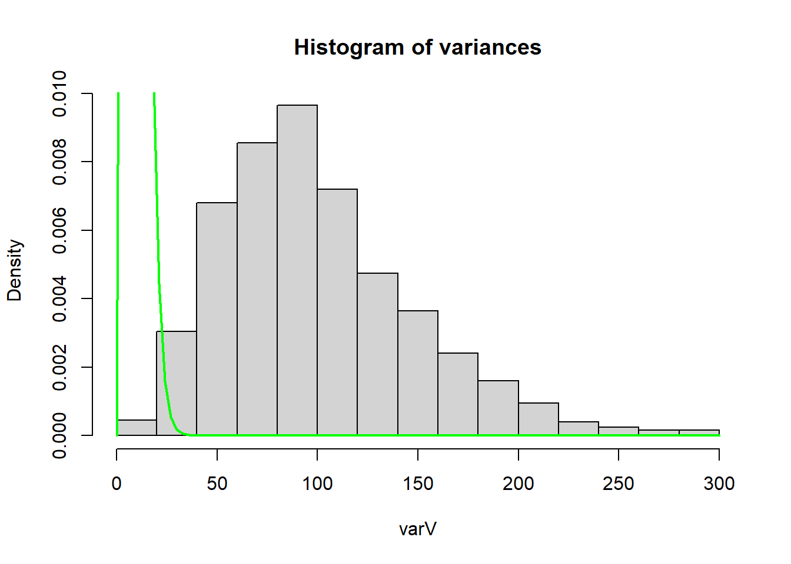
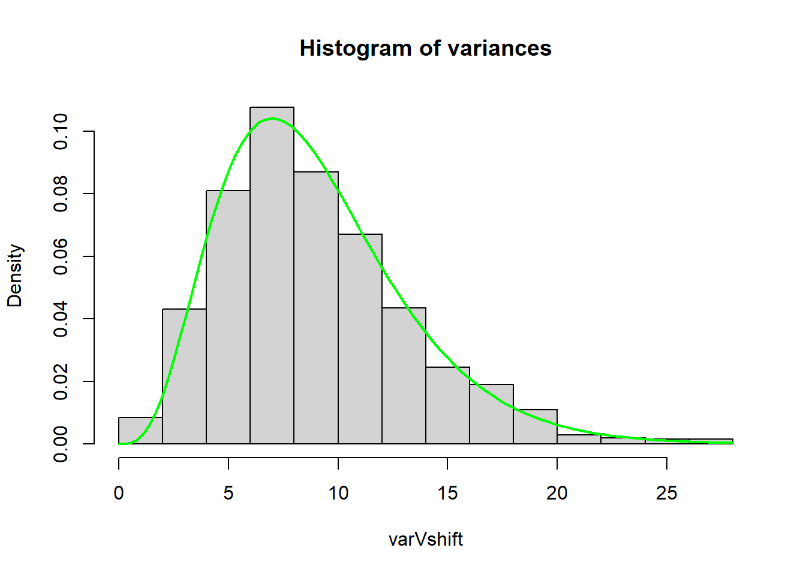
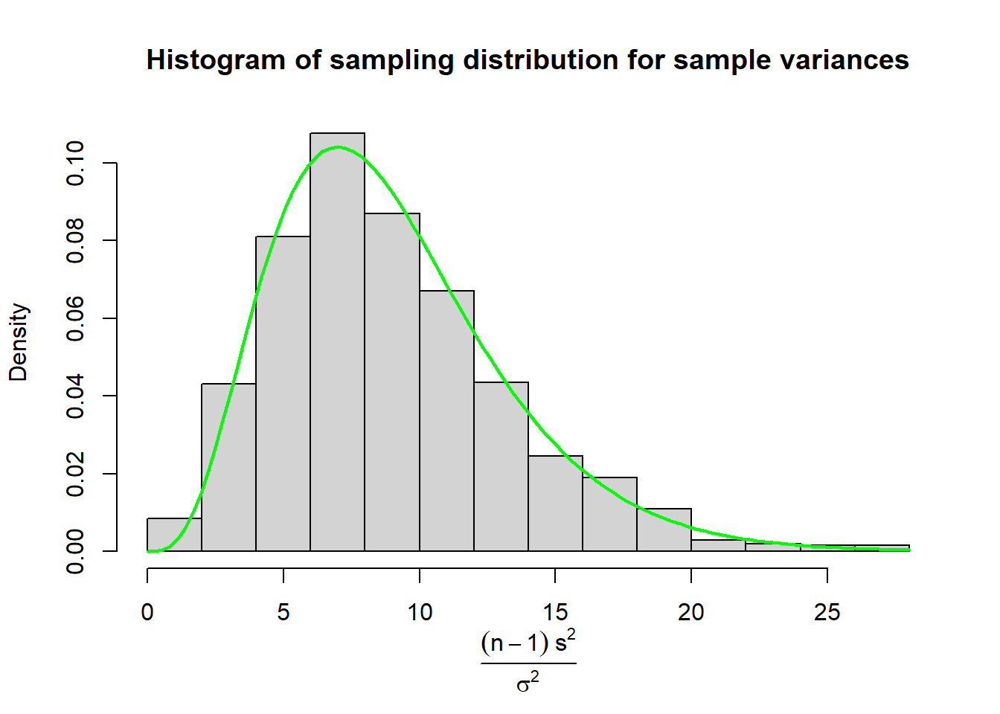
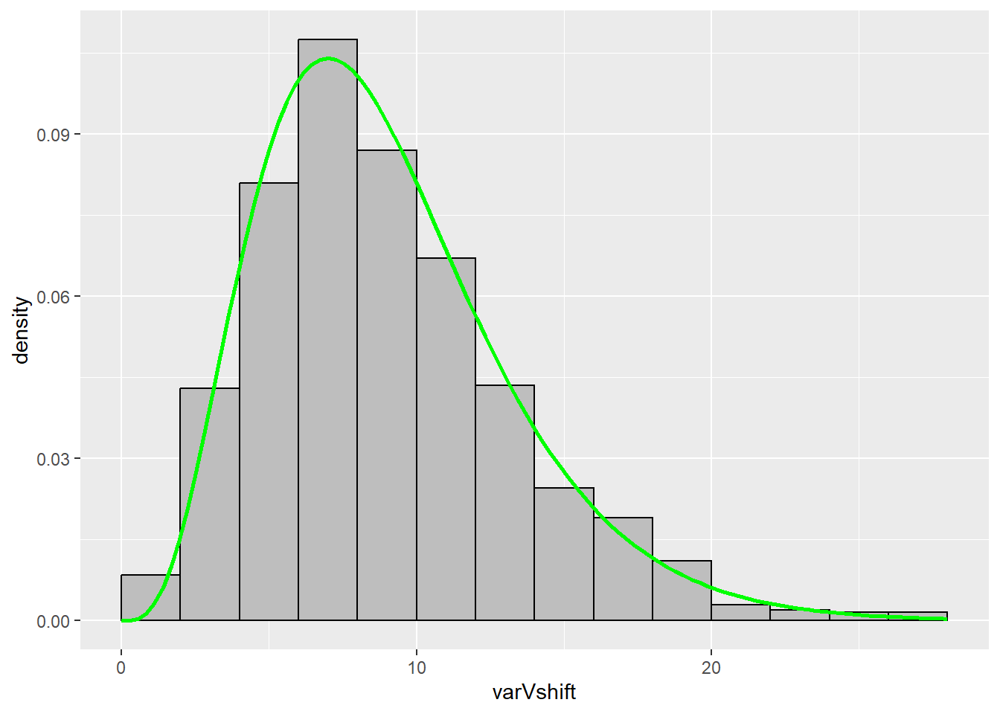

This page is part of the University of Colorado-Anschutz Medical Campus’ BIOS 6618 Recitation collection. To view other questions, you can view the BIOS 6618 Recitation collection page or use the search bar to look for keywords.
Homework Problem: Sampling Distributions
Simulated Data to Plot Histograms of Sampling Distributions of the Mean, Median, and Variance
For a population that is normally distributed with mean 40 and standard deviation 10, generate histograms showing the sampling distribution of the mean, median, and variance. Use 1,000 simulation iterations that each have a sample size of n = 10.
Solution:
Code
set.seed(515) # set seed for reproducibilitynsim <-1000# set number of simulationsn <-10# set sample size# initialize 3 vectors to store our results for the sample mean, sample median, and sample variancemeanV <-rep(NA, 1000)medianV <-rep(NA, 1000)varV <-rep(NA, 1000)# loop through our nsim simulations to save the sample summary statisticsfor(i in1:nsim){ random <-rnorm(n, mean =40, sd =10) meanV[i] <-mean(random) medianV[i] <-median(random) varV[i] <-var(random)}# create a panel of our 3 histogramspar( mfrow=c(1,3) )hist(meanV)hist(medianV)hist(varV)
Distributions of the Sampling Distribution
Based on theory and/or your plots from 3a, what is the distribution of the sample mean and sample median in this case (e.g., uniform, exponential, gamma, normal, etc.)?
Solution:
The sample mean and median are both normally distribution for data simulated from a normal distribution. This can be seen in the plots for the mean and median where the histograms both look approximately normal. Theoretically, the sample mean is normally distributed by the central limit theorem.
The sample median is a bit trickier. In a 1955 paper, Dr. Chu\(^1\) notes the distribution for a sample median “tends rapidly to normality”. A post on Cross Validated walks through some more detailed answers where the sample median’s distribution is normal given various assumptions that must be met.
\(^1\)Chu, John T. “On the distribution of the sample median.” The Annals of Mathematical Statistics (1955): 112-116.
Validating the Sampling Distribution of the Variance
When the underlying population is normally distributed, the sampling distribution of \(\frac{(n - 1)s^2}{\sigma^2} \sim \chi^2_{n-1}\) (i.e., it is chi-squared with \(n-1\) degrees of freedom).
Validate this theoretical sampling distribution by plotting the histogram of simulation results from part a for the 1,000 sample variances with the theoretical distribution.
More hints: It may be helpful to note that in part a we generated a vector of sampling variances, but the theoretical distribution is also involves \((n-1)\) and \(\sigma^2\) (i.e., the sample size minus 1 and the “true” variance). So we may need to multiply the vector from part a by something to match the scales. Additionally, you should use the probability=TRUE option if you are using the hist() function to plot the histogram since the default is to plot the y-axis with respect to the frequency instead of probability.
Solution:
The chi-squared distribution is a continuous distribution with one parameter (\(k\), also known as its degrees of freedom). The shape of the distribution is controlled entirely by the value of \(k\) we provide, and in R we can plot its probability density function (PDF) using dchisq(x, df), where x is the values we wish to calculate the height (i.e., density) of the PDF and df is our degrees of freedom.
One way to overlay the probability density function is to use functions such as curve( dchisq(x, df=9), col='green', lwd=2, add=T). However, this specific density curve is for \(\chi^2_{n-1}\), which is the sampling distribution of \(\frac{(n - 1)s^2}{\sigma^2}\).
However, in 3a we only calculated the sample variance, \(s^2\). So if we try to add the density curve to our plot from 3a we have:
Code
hist(varV, main='Histogram of variances', probability=TRUE) # set probability=T for density instead of frequencycurve( dchisq(x, df=9), col='green', lwd=2, add=T)

We can tell that the chi-squared curve we added to the histogram is not a match for just \(s^2\). In other words, \(s^2 \nsim \chi^2_{n-1}\) (i.e., \(s^2\) is not distributed as a \(chi^{2}_{n-1}\) distribution).
Instead, we need to multiply our sample variances from 3a by \(\frac{n-1}{\sigma^2}\) to match the given sampling distribution:
Code
varVshift <- varV * (9/10^2) # multiply varV, o.w. x-axis range is diff.hist(varVshift, main='Histogram of variances', probability=TRUE) curve( dchisq(x, df=9), col='green', lwd=2, add=T)

By plotting a histogram of \(\frac{(n-1)s^2}{\sigma^2}\) we see that the sampling distribution does match a \(\chi^{2}_{n-1}\).
Plot with Mathematical Labels
Perhaps we wanted to be very explicit about what our x-axis is, but writing “(n-1)s^2 / sigma^2” doesn’t quite scratch that itch. We can use expression() to change the x-axis to mathematically represent our equation:
Code
hist(varVshift, main='Histogram of sampling distribution for sample variances', probability=TRUE, xlab='')mtext(text =expression(frac((n -1) ~s^2, sigma^2)),side =1, # place it on bottom of figureline =3.5) # change position of label to avoid overlapping x-axiscurve( dchisq(x, df=9), col='green', lwd=2, add=T)

Plot with ggplot
We can also make a version using ggplot by using the stat_function() function:
Code
library(ggplot2)ggplot() +geom_histogram(aes(x = varVshift, y = ..density..), # ..density.. specifies we want the density on the y-axis instead of a countfill='gray', colour='black',breaks =seq(0,28,2)) +# specified to better match the base R versionstat_function(fun = dchisq, # function to apply and plotargs =list(df=9), # additional argument to pass along (e.g., the df for our chi-squared dist.)xlim =c(0,28), # I added this range so the line would go over the whole histogram, otherwise it stops at the max X value (i.e., I didn't like how the line without this argument stopped mid-histogram bin)color ='green', size=1) # makes the line a little thicker
Warning: Using `size` aesthetic for lines was deprecated in ggplot2 3.4.0.
ℹ Please use `linewidth` instead.
Warning: The dot-dot notation (`..density..`) was deprecated in ggplot2 3.4.0.
ℹ Please use `after_stat(density)` instead.

As an aesthetic bonus, if you wanted to change the style of your ggplot you can choose different themes. For instance, if you wanted to better replicate base R’s minimalistic aesthetic, we could add theme_classic():
Code
library(ggplot2)ggplot() +geom_histogram(aes(x = varVshift, y = ..density..), fill='gray', colour='black', breaks =seq(0,28,2)) +stat_function(fun = dchisq, args =list(df=9), xlim =c(0,28), color ='green', size=1) +theme_classic() # creates a white background with no lines
Source Code
---title: "Sampling Distributions of the Mean, Median, and Variance"author: name: Alex Kaizer roles: "Instructor" affiliation: University of Colorado-Anschutz Medical Campustoc: truetoc_float: truetoc-location: leftformat: html: code-fold: show code-overflow: wrap code-tools: true---```{r, echo=F, message=F, warning=F}library(kableExtra)library(dplyr)```This page is part of the University of Colorado-Anschutz Medical Campus' [BIOS 6618 Recitation](/recitation/index.qmd) collection. To view other questions, you can view the [BIOS 6618 Recitation](/recitation/index.qmd) collection page or use the search bar to look for keywords.# Homework Problem: Sampling Distributions## Simulated Data to Plot Histograms of Sampling Distributions of the Mean, Median, and VarianceFor a population that is normally distributed with mean 40 and standard deviation 10, generate histograms showing the sampling distribution of the mean, median, and variance. Use 1,000 simulation iterations that each have a sample size of n = 10.**Solution:** ```{r}set.seed(515) # set seed for reproducibilitynsim <-1000# set number of simulationsn <-10# set sample size# initialize 3 vectors to store our results for the sample mean, sample median, and sample variancemeanV <-rep(NA, 1000)medianV <-rep(NA, 1000)varV <-rep(NA, 1000)# loop through our nsim simulations to save the sample summary statisticsfor(i in1:nsim){ random <-rnorm(n, mean =40, sd =10) meanV[i] <-mean(random) medianV[i] <-median(random) varV[i] <-var(random)}# create a panel of our 3 histogramspar( mfrow=c(1,3) )hist(meanV)hist(medianV)hist(varV)```## Distributions of the Sampling DistributionBased on theory and/or your plots from **3a**, what is the distribution of the sample mean and sample median in this case (e.g., uniform, exponential, gamma, normal, etc.)?**Solution:** The sample mean and median are both normally distribution for data simulated from a normal distribution. This can be seen in the plots for the mean and median where the histograms both look approximately normal. Theoretically, the sample mean is normally distributed by the central limit theorem. The sample median is a bit trickier. In a 1955 paper, Dr. Chu$^1$ notes the distribution for a sample median "tends rapidly to normality". A post on [Cross Validated](https://stats.stackexchange.com/questions/45124/central-limit-theorem-for-sample-medians) walks through some more detailed answers where the sample median's distribution is normal given various assumptions that must be met.$^1$Chu, John T. "On the distribution of the sample median." *The Annals of Mathematical Statistics* (1955): 112-116.## Validating the Sampling Distribution of the VarianceWhen the underlying population is normally distributed, the sampling distribution of $\frac{(n - 1)s^2}{\sigma^2} \sim \chi^2_{n-1}$ (i.e., it is chi-squared with $n-1$ degrees of freedom).Validate this theoretical sampling distribution by plotting the histogram of simulation results from part *a* for the 1,000 sample variances with the theoretical distribution.*More hints:* It may be helpful to note that in part *a* we generated a vector of sampling variances, but the theoretical distribution is also involves $(n-1)$ and $\sigma^2$ (i.e., the sample size minus 1 and the "true" variance). So we may need to multiply the vector from part *a* by something to match the scales. Additionally, you should use the `probability=TRUE` option if you are using the `hist()` function to plot the histogram since the default is to plot the y-axis with respect to the frequency instead of probability.**Solution:** The [chi-squared distribution](https://en.wikipedia.org/wiki/Chi-squared_distribution) is a continuous distribution with one parameter ($k$, also known as its degrees of freedom). The shape of the distribution is controlled entirely by the value of $k$ we provide, and in R we can plot its probability density function (PDF) using `dchisq(x, df)`, where `x` is the values we wish to calculate the height (i.e., density) of the PDF and `df` is our degrees of freedom.One way to overlay the probability density function is to use functions such as `curve( dchisq(x, df=9), col='green', lwd=2, add=T)`. However, this specific density curve is for $\chi^2_{n-1}$, which is the *sampling distribution* of $\frac{(n - 1)s^2}{\sigma^2}$. However, in **3a** we only calculated the sample variance, $s^2$. So if we try to add the density curve to our plot from **3a** we have:```{r}hist(varV, main='Histogram of variances', probability=TRUE) # set probability=T for density instead of frequencycurve( dchisq(x, df=9), col='green', lwd=2, add=T)```We can tell that the chi-squared curve we added to the histogram is not a match for just $s^2$. In other words, $s^2 \nsim \chi^2_{n-1}$ (i.e., $s^2$ is not distributed as a $chi^{2}_{n-1}$ distribution). Instead, we need to multiply our sample variances from **3a** by $\frac{n-1}{\sigma^2}$ to match the given sampling distribution:```{r}varVshift <- varV * (9/10^2) # multiply varV, o.w. x-axis range is diff.hist(varVshift, main='Histogram of variances', probability=TRUE) curve( dchisq(x, df=9), col='green', lwd=2, add=T)```By plotting a histogram of $\frac{(n-1)s^2}{\sigma^2}$ we see that the sampling distribution does match a $\chi^{2}_{n-1}$.### Plot with Mathematical LabelsPerhaps we wanted to be very explicit about what our x-axis is, but writing "(n-1)s^2 / sigma^2" doesn't quite scratch that itch. We can use `expression()` to change the x-axis to mathematically represent our equation:```{r}hist(varVshift, main='Histogram of sampling distribution for sample variances', probability=TRUE, xlab='')mtext(text =expression(frac((n -1) ~s^2, sigma^2)),side =1, # place it on bottom of figureline =3.5) # change position of label to avoid overlapping x-axiscurve( dchisq(x, df=9), col='green', lwd=2, add=T)```### Plot with `ggplot`We can also make a version using `ggplot` by using the `stat_function()` function:```{r}library(ggplot2)ggplot() +geom_histogram(aes(x = varVshift, y = ..density..), # ..density.. specifies we want the density on the y-axis instead of a countfill='gray', colour='black',breaks =seq(0,28,2)) +# specified to better match the base R versionstat_function(fun = dchisq, # function to apply and plotargs =list(df=9), # additional argument to pass along (e.g., the df for our chi-squared dist.)xlim =c(0,28), # I added this range so the line would go over the whole histogram, otherwise it stops at the max X value (i.e., I didn't like how the line without this argument stopped mid-histogram bin)color ='green', size=1) # makes the line a little thicker```As an aesthetic bonus, if you wanted to change the style of your `ggplot` you can choose different themes. For instance, if you wanted to better replicate base R's minimalistic aesthetic, we could add `theme_classic()`:```{r}library(ggplot2)ggplot() +geom_histogram(aes(x = varVshift, y = ..density..), fill='gray', colour='black', breaks =seq(0,28,2)) +stat_function(fun = dchisq, args =list(df=9), xlim =c(0,28), color ='green', size=1) +theme_classic() # creates a white background with no lines```